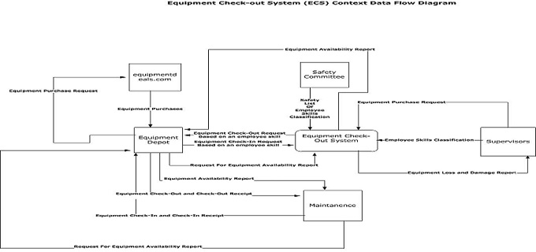

Designs and Diagrams
Any professional project built, needs a diagram designed before getting into coding a project, it is a part of traditional or agile project management. A design could be created using professional software such as MS Visio or IMB Rational Software Architect. A software design usually using a specific modeling language called UML (Unified Modeling Language), it is used to model diagrams using specific programming logic and concept such as Object Oriented Concept, I am not going to get into details of that concept on this page, but if people are interested in learning more about it, they can take advantage of forums, training videos, and documents that will become available as soon as my website goes live. This page is created in mind to display some examples of diagrams that are used during modeling process. I will display images as well as let people download them in its own format or part of a word document.
Equipment Check-out System: Context Data Flow Diagram
A data flow diagram is not using UML yet, but provides clear view of what system would look like in the end. It is usually displayed by using squares with labels for the part of a system that are connected with arrows through which information flows from one item to the other. Based on diagrams we can also create specific charts such as the one that visitors be able to download here (Problem Analysis Form). This diagram is for a system at the company that clearly has no way of tracking their equipment that their employees use on daily basis, as per given problem I have created a software or rather a system to solve the problem at hand. Here visitors will be able to download a file with Problem Analysis and a Data Flow Diagram for the system that I am proposing here.(Click Here to Download Full Package). It is just a beginning of what is to come, I will place full system in UML diagrams along with documentation for visitors to view, and to use for their own needs or examples.
